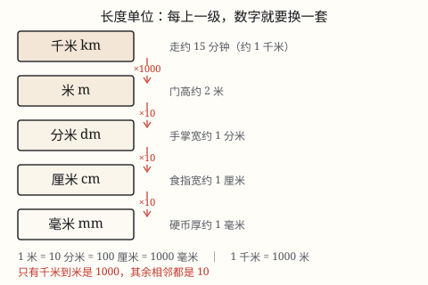
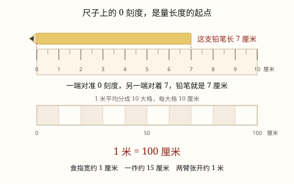

长度单位：厘米、米、毫米、分米与千米
用拃、用铅笔量同一张课桌，报出来的数不一样，所以要有统一的长度单位。1 米 = 100 厘米，短的用厘米，长的用米。
| 所属主题 | 图形的认识与测量 |
|---|---|
| 所属模块 | 图形与几何 |
| 课标学段 | 第一学段（1~2年级） |
| 核心素养 | 量感空间观念应用意识 |
教材定位
人民教育出版社《2024年版》
对应二上第 4 单元「厘米和米」：认识厘米与米、测量与估测。；对应三上第 3 单元「毫米、分米和千米」：长度单位换算与千米的选择。
课标要求
| 图形与几何·图形的认识与测量 | 结合生活实际，体会建立统一度量单位的重要性，认识长度单位米、厘米。能估测一些物体的长度，并进行测量。 印刷第 28 页 行为动词：理解 |
|---|---|
| 图形与几何·图形的认识与测量 | 在图形认识与测量的过程中，形成初步的空间观念和量感。 印刷第 28 页 行为动词：感悟 |
| 图形与几何·图形的认识与测量 | 认识长度单位千米，知道分米、毫米；认识面积单位厘米²、分米²、米²；能进行简单的单位换算；能恰当地选择单位估测一些物体的长度和面积，会进行测量。 印刷第 29 页 行为动词：理解 |
说明
不用尺子，也能比长短：用拃量课桌。张开手，拇指尖到中指尖的距离叫一拃。老师量同一条课桌边，得到 3 拃；你量同一条边，得到 4 拃。同一条边，怎么数不一样？因为老师的手大、你的手小——一拃本身有多长，两个人并不相同。
换成铅笔也一样：用长铅笔量课桌，2 支就够了；用短铅笔量，要 3 支。拿什么量，就得到什么数，这样的数没办法告诉别人课桌到底多长。
所以大家约定一根「所有人都一样长」的标准，叫长度单位。最常用的两个是厘米和米。尺子上 0 到 1 之间的那一小段就是 1 厘米；食指的宽大约是 1 厘米，一枚图钉的长也大约是 1 厘米。
1 米有多长？把 100 个 1 厘米一段一段接起来，正好是 1 米，所以 1 米 = 100 厘米。教室门的宽大约 1 米，你两臂张开也差不多 1 米多一点。
量铅笔、橡皮、手指这样短的东西用厘米；量教室、黑板、跳绳这样长的东西用米。单位选对了，数才好读、好比。
（千米、分米和毫米）
量一支铅笔，用厘米就够了；可量一张纸有多厚、两个城市隔多远，厘米就不够用——一头太粗，一头太细。于是长度单位又添了三个：毫米、分米、千米。
1 毫米有多长？一枚 1 元硬币的厚度大约 1 毫米，10 张纸叠起来也大约 1 毫米。尺子上每一小格就是 1 毫米，1 厘米里有 10 小格，所以 1\text 厘米 = 10\text 毫米。
1 分米有多长？手掌平放，从手腕到中指尖差不多 1 分米，一支新粉笔也差不多。1\text 分米 = 10\text 厘米，1\text 米 = 10\text 分米。
1 千米有多长？操场一圈 400 米，两圈半就是 1 千米；按平常走路的速度，走 1 千米大约要 15 分钟。1\text 千米 = 1000\text 米。
把它们排成队：毫米、厘米、分米、米，每相邻两个之间都是 10；只有米到千米跳了一大级，是 1000。记住「10、10、10、1000」这一串，比背四个孤零零的数省力。
使用场景
量身高：体检时医生说你 128 厘米，也可以说 1 米 28 厘米，两种说法一样长。
买布买绳：妈妈买 3 米彩带，剪下 40 厘米做蝴蝶结，还剩多少。
做手工：剪一条 15 厘米长的纸条折小扇子，剪 1 米长的毛线跳绳。
量家具：买书桌前先量房间，看 1 米 20 厘米的桌子放不放得下。
比远近、比长短：跳远跳了 1 米 60 厘米，同桌跳了 145 厘米，谁跳得远。
（千米、分米和毫米）
快递单：纸箱外包装常写「240×180×90 毫米」，因为差一毫米就塞不进快递柜。
图纸和零件：机器零件的厚度、螺丝的直径都用毫米，图纸上少写一个 0 就装不上。
降雨量：天气预报说「昨天降雨 25 毫米」，说的是水积起来的深度。
路程：地铁两站之间、两个城市之间用千米，说「3 千米」比说「3000 米」利索。
注意点
尺子的 0 刻度要对准物体的一端。如果从刻度 1 量起，另一端对着 8，那长度是 8-1=7 厘米，不是 8 厘米。
尺子放平、放直，紧贴物体，斜着量出来的数会偏大。
单位不能乱用。课桌高约 70 厘米，不是 70 米；教室长约 8 米，不是 8 厘米。写完答案想一想「这个长度合不合常理」。
1 米 = 100 厘米，不是 10 厘米。比较两个长度之前，先化成同一个单位，再比数字大小。
（千米、分米和毫米）
米和千米别混：教室长 8 米，不是 8 千米。千米用在路程上，是「一千个米」。
1 千米 = 1000 米，不是 100 米，也不是 10 米。
毫米到厘米是 10，不是 100。只有米到千米那一级才是 1000。
换算先看方向：大单位化小单位数变大（乘进率），小单位化大单位数变小（除以进率）。

图 1：长度单位像五级台阶，每一级都有一样能摸得着的东西做参照
为什么是这样

图 1：量长度从 0 刻度量起；1 米里正好排下 100 个 1 厘米
算理推导
先做一次「量同一张课桌」的对比：老师一拃 20 厘米，量 3 拃正好量完；你一拃 15 厘米，要量 4 拃。两次都没量错，可报出来的数一个 3 一个 4——它们用的「一拃」根本不是同一根尺。
问题就出在单位上：拃、铅笔、手掌，每个人手里的都不一样长。单位不一样，数就没法比较，也没法传给别人。你跟木匠说「课桌 4 拃」，他用自己的手一量，做出来就是错的。
要解决这件事，只能让所有人用同一根「标准棍」。人们把某一段固定的长度定为 1 厘米，印在每一把尺子上。从此不管谁去量课桌，量出来都是 60 厘米——数一样，因为尺子一样。这就是「统一长度单位」的必要性。
量更长的东西，用厘米写数太大（教室长 800 厘米，说着费劲），于是再约定一个大一些的单位：米。把 100 个 1 厘米接起来正好是 1 米，所以 1\text 米 = 100\text 厘米。
米和厘米能换算，是因为它们是同一把尺子上的不同刻度，不是两套互不相干的东西。1 米 20 厘米就是 100 厘米再加 20 厘米，等于 120 厘米。
（千米、分米和毫米）
先问：为什么厘米不够用？量一张纸，厚度不到 1 厘米，只能含含糊糊说「不到一厘米」，说不清到底多厚。把 1 厘米再切成更细的格，就得到了毫米。
反过来，量从家到学校，用米写是 1500 米，数字长、读着费劲。把 1000 米打成一包，就写成 1.5 千米——话短了，意思一点没少。
所以新单位不是随便添的，是为了把话说清楚：太小的量要更细的刻度，太大的量要更大的「一包」。
进率也就跟着来了：1 厘米切成 10 小格，每格 1 毫米，所以 1\text 厘米 = 10\text 毫米；10 个 1 厘米并排正好 1 分米；10 个 1 分米接起来正好 1 米。
1 千米就是把 1000 个 1 米接起来。「千米」的「千」不是形容词，就是字面的 1000。
动手实验
三个人用拃量同一张课桌，把结果写在纸上——三个数一定不一样。再换同一把尺子量，三个人报出的数完全一样。把这个对比记在本子上，你就明白「统一单位」到底解决了什么问题。接着用 1 米长的绳子量教室门宽、讲台长，用手比一比 1 厘米（食指宽）、1 米（两臂张开），把这两个长度记进身体里。 （千米、分米和毫米） ① 用尺子量 10 张纸的厚度，大约 1 毫米；再量 100 张，大约 1 厘米。② 量手掌宽（约 8 厘米）、粉笔长（约 1 分米）、课桌高（约 7 分米），把这三个数记进身体里当「尺子」。③ 在操场上走 100 米，数走了多少步，再推一推 1 千米要走多少步、几分钟，然后真的走一趟，看看猜得准不准。
按场景的例题
例 1（场景：计量与估算） 量课桌的高
小华量课桌的高，他把课桌的顶端对准尺子的刻度 2，底端正好对着刻度 72。课桌高多少厘米？
解：不是 72 厘米。尺子没有从 0 刻度量起，走的是从 2 到 72 这一段，长度是 72-2=70。也可以把 0 刻度对准桌面重新量一次，直接读出 70。
答：课桌高 70 厘米。
例 2（场景：饮食与配比） 体育课比跳绳长短
小丽的跳绳长 2 米，小刚的跳绳长 180 厘米。谁的跳绳长？长多少厘米？
解：先统一单位：2\text 米 = 200\text 厘米。200 > 180，小丽的长；200-180=20。
答：小丽的跳绳长，长 20 厘米。
例 3（场景：购物消费） 买彩带做手工
妈妈买了 3 米彩带，做蝴蝶结用去 40 厘米。还剩多少厘米？
解：3\text 米 = 300\text 厘米，300-40=260。
答：还剩 260 厘米，也就是 2 米 60 厘米。
例 4（场景：上学日常） 体检量身高
小明身高 1 米 25 厘米，小红身高 118 厘米。谁高？高多少厘米？
解：1\text 米 25\text 厘米 = 125\text 厘米；125-118=7。
答：小明高，高 7 厘米。
例 5（场景：物流运输） 看快递箱尺寸
一个快递纸箱标着「长 240 毫米、宽 180 毫米」，合多少厘米？
解：毫米化厘米，除以进率 10：240 ÷ 10 = 24，180 ÷ 10 = 18。
答：长 24 厘米，宽 18 厘米。
例 6（场景：行程出行） 地铁站间距离
地铁从 A 站到 B 站约 1 千米 200 米，合多少米？
解：1\text 千米 = 1000\text 米，1000 + 200 = 1200。
答：1200 米。
例 7（场景：农业生产） 量讲台
教室讲台长 12 分米，合多少厘米？合几米几分米？
解：分米化厘米乘 10：12 × 10 = 120 厘米；10 分米是 1 米，所以 12 分米 = 1 米 2 分米。
答：120 厘米，也就是 1 米 2 分米。
例 8（场景：自然现象） 看降雨量
气象预报说昨天降雨量 25 毫米，合几厘米几毫米？
解：10 毫米 = 1 厘米，25 ÷ 10 = 2 余 5。
答：2 厘米 5 毫米。
常用推论
1\text 米 = 100\text 厘米。米化厘米，数后面添两个 0（2\text 米 = 200\text 厘米）；厘米化米，去掉两个 0。
几米几厘米化成厘米：米数 × 100 再加厘米数，如 1 米 25 厘米 = 125 厘米。
比较两个长度，先化成同一个单位再比大小；单位不同就直接比数字，一定出错。
估长度可以找「身体尺」：食指宽约 1 厘米，一拃约 15 厘米，两臂张开约 1 米。
1\text 厘米 = 10\text 毫米，1\text 分米 = 10\text 厘米，1\text 米 = 10\text 分米。
1\text 米 = 100\text 厘米 = 1000\text 毫米，1\text 千米 = 1000\text 米。
大单位化小单位乘进率，小单位化大单位除以进率；米化毫米要乘 1000，中间跨了两级。
估长度靠身体尺：1 毫米约一枚硬币厚，1 厘米约食指宽，1 分米约一掌宽，1 米约两臂张开，1 千米约走 15 分钟。
易错点
错量橡皮时把一端对准刻度 3，另一端对着刻度 8，说橡皮长 8 厘米。
为什么错尺子没有从 0 刻度量起。8 是末端刻度，不是长度；长度是两端刻度之差。
正确长度 = 8-3 = 5 厘米。也可以把橡皮挪到 0 刻度处，直接读出 5 厘米。
错填单位：课桌高约 70 米。
为什么错70 米比二十层楼还高，一张课桌不可能有这么高。单位选大了——课桌高到你的腰，大约 70 厘米。
正确课桌高约 70 厘米。填完单位先想一下：这个长度跟我身体的哪一部分差不多？
错说「1 米 = 10 厘米」。
为什么错把米和厘米的进率记成了 10。1 米里能排下 100 个 1 厘米，不是 10 个。
正确1\text 米 = 100\text 厘米，所以 3\text 米 = 300\text 厘米。
错比较 2 米和 180 厘米，直接说「180 比 2 大，所以 180 厘米长」。
为什么错两个数的单位不同，不能直接比数字。2 的单位是米，180 的单位是厘米。
正确先化成厘米：2\text 米 = 200\text 厘米，200 > 180，所以 2 米长。
错填单位：教室的长约 8 千米。
为什么错8 千米是 8000 米，比二十个操场连起来还长，一间教室不可能这么大。单位选大了两级。
正确教室的长约 8 米。填完先想一下：这个长度要走几步？
错说「1 千米 = 100 米」，把 100 米的直道当成 1 千米。
为什么错「千米」的千是一千，不是一百。1 千米里要排 1000 个 1 米。
正确1\text 千米 = 1000\text 米。400 米的跑道要跑 2 圈半才是 1 千米。
错5 厘米 3 毫米，算成 8 毫米，或者写成 53 厘米。
为什么错把「相加」和「换算」搞混了：5 厘米不是 5 毫米，要先化成 50 毫米才能和 3 毫米相加；写成 53 厘米又把单位弄反了。
正确5\text 厘米 = 50\text 毫米，50 + 3 = 53 毫米，也就是 5 厘米 3 毫米。
直观理解
长度单位像全班共用的「同一把勺子」。分汤时如果各人用各人的勺子，有人说三勺有人说五勺，厨房根本不知道要煮多少。换成同一把量勺，谁舀都是三勺，厨房就懂了。厘米和米就是全世界共用的那把量勺，只分了大小两个号：小号量短的，大号量长的。 （千米、分米和毫米） 长度单位像一套从小到大叠着的盒子：10 个毫米装一盒是厘米，10 盒装一箱是分米，10 箱装一柜是米；最后一跳特别大，1000 个米才装满一节车厢——千米。挑盒子要看东西多大，太小的东西用大盒子装说不清，太大的东西用小盒子装数不完。
量长短，先统一；尺子零刻要对齐；一米就是百厘米，短用厘米长用米。 （千米、分米和毫米） 毫米薄薄一枚币，分米摊开一掌宽；一千个米是千米，走路一刻才走完。